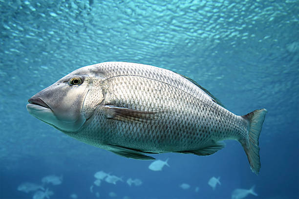
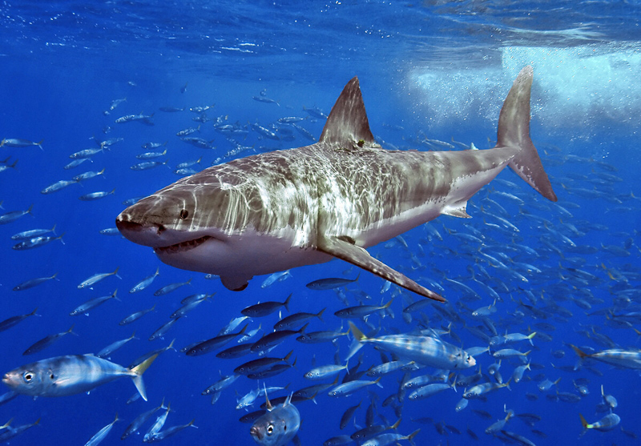
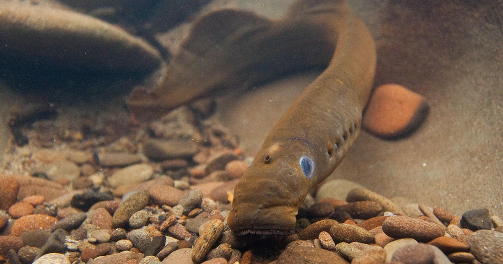

Bony fishes are a group of aquatic vertebrates characterized by having a skeleton made of bone. This characteristic is in contrast to the cartilaginous fishes, a group of fish whose skeleton consists of the firm but flexible and elastic tissue called cartilage.
In addition to having a rigid bone skeleton, bony fish are characterized anatomically by having gill covers and an air bladder. Bony fishes use gills to breathe and have color vision.
Also referred to as Osteichthyes, bony fish make up the majority of fish today. In fact, they are most likely the animal that comes to mind when you first think of the word 'fish.' Bony fishes are the most diverse of all groups of fishes and are also the most diverse group of vertebrates alive today, with approximately 29,000 living species.
Bony fishes include two subgroups—the ray-finned fishes and the lobe-finned fishes.
Ray-finned fish, or actinopterygii, are called that because their fins are webs of skin held up by bony spines. The spines often stick out in a way that looks like rays extending from their body. These fins are attached directly to the internal skeletal system of the fish.
Lobe-finned fish are also classified as sarcoterygii. As opposed to the bony spines of the ray-finned fish, lobe-finned fish have fleshy fins that are joined to the body by a single bone.

Cartilaginous fish are so named because, instead of bony skeletons, their body frame consists of cartilage. Flexible but still tough, cartilage provides enough structural support to enable these fish to grow to enormous sizes.
Cartilaginous fish include sharks, rays, skates, and chimaeras. These fish all fall into the group called elasmobranchs.
Cartilaginous fish also differ from bony fish in the way that they breathe. While bony fish have a bony covering over their gills, cartilaginous fish have gills that open to the water directly through slits. Cartilaginous fish may also breathe through spiracles rather than gills. Spiracles are openings on top of the heads of all rays and skates as well as some sharks, allowing them to breathe without taking in sand.
Additionally, cartilaginous fish are covered in placoid scales or dermal denticles. These tooth-like scales are completely different from the flat scales that bony fish sport.

Lampreys are jawless vertebrates that have a long, narrow body. They lack scales and have a sucker-like mouth filled with little teeth. Although they look like eels, they are not the same and should not be confused.
There are two kinds of lampreys: parasitic and non-parasitic.
Parasitic lampreys are sometimes referred to as the vampires of the sea. They are called so because they use their sucker-like mouth to attach themselves to the sides of other fish. Then, their sharp teeth cut through flesh and suck out blood and other essential body fluids.
Non-parasitic lampreys feed in a less gory way. These kinds of lampreys are usually found in freshwater and they feed through filter feeding.
These sea creatures are an ancient lineage of vertebrates, and there are about 40 species of lamprey alive today. Members of this group include pouched lampreys, Chilean lampreys, Australian lampreys, northern lampreys, and others.
